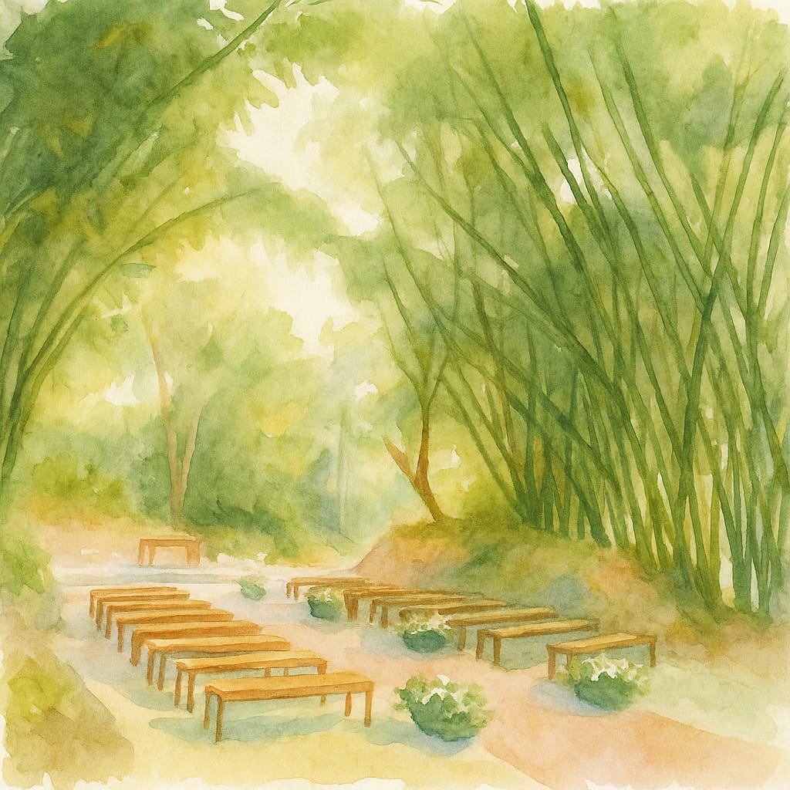

Yasmin Amaral & Breno Fróes
21 de novembro de 2026

Nossa história2004
Nossa história começou lá em 2004. Nos conhecemos ainda crianças, frequentando a mesma igreja, no pequeno ministério infantil. Naquela época, não éramos exatamente próximos nossas interações se resumiam a implicâncias, alguns puxões de cabelo e muitas provocações.
2019
Ao longo dos anos, seguimos apenas como colegas e nos encontrando na igreja, sem imaginar o que o futuro nos reservava. Até que, em 2019, depois de muitas músicas compartilhadas e stories respondidos, começamos a nos aproximar de verdade. Conversas, descobertas e sentimentos foram surgindo e algo muito especial começou a ser construído entre nós.
Após alguns encontros no Mc Donald's e beijos atrapalhados, decidimos caminhar juntos. Em meio a tantas incertezas, nos apaixonamos, crescemos e aprendemos muito lado a lado.
2021
Em 2021, após 1 ano e 9 meses, as diferenças que um dia nos uniram, dessa vez falaram mais alto e seguimos caminhos distintos.
2023
A vida, no entanto, tinha outros planos. Continuamos frequentando a mesma igreja e nos encontrando semana após semana ainda que em silêncio.
Foi então que, em 2023, em uma conversa simples e sincera do dia a dia, voltamos a nos falar. Dessa vez, com mais maturidade, experiências e uma nova forma de enxergar a vida e a nós mesmos.
Pois então, recomeçamos, ou como gostamos de encarar, iniciamos algo totalmente novo. Agora mais maduros, levando conosco os aprendizados do passado, mas com o coração voltado para o futuro e para os nossos sonhos a dois.
2025
Em 2025, demos mais um passo importante: o noivado. Em um momento inesquecível, a bordo de um veleiro na Marina da Glória, tão perfeito quanto sempre sonhamos, iniciamos oficialmente um novo capítulo de nossas vidas. Agora, estamos prontos para o nosso maior “sim”, cheios de gratidão, amor e expectativa pelo que está por vir.